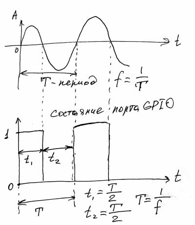

Мы научились передавать на порт GPIO последовательность единиц и нулей, другими словами мы передавали последовательность бит. Эта последовательность бит управляла включением светодиода. Казалось бы, если любой бит может иметь только два состояния- «1» и «0», то об аналоговом сигнале с цифрового выхода не может быть и речи. Теоретически это так, практически это тоже так, но фактически… Не смотря на то, что уровень сигнала на выходе порта мы не можем изменять так, как нам хочется, в некоторых случаях мы цифровым сигналом можем имитировать аналоговый. Сегодняшняя часть цикла статей «GPIO для чайников» будет подготовительной для понимания этого процесса.В программе мигающего светодиода мы последовательно включали светодиод на 500 миллисекунд и на 500 миллисекунд его выключали. Давайте посмотрим, что получится, если мы будем его включать на 200 миллисекунд, а выключать на 800 миллисекунд. Можете самостоятельно отредактировать созданную ранее программу button.c изменив временные промежутки в функции bcm2835_delay(). А можете набить предлагаемую мной программку, снабжённую простейшим интерфейсом общения с пользователем.
// count.c
// Программа включает светодиод требуемое количество раз.
// Светодиод подключен к порту Р1_03
// Компиляция: gcc -o count count.c -lrt -lbcm283
// Запуск: sudo ./count
#include <stdio.h>
#include <bcm2835.h>
#define PIN RPI_GPIO_P1_03
int main()
{
if (!bcm2835_init())
return 1;
bcm2835_gpio_fsel(PIN, BCM2835_GPIO_FSEL_OUTP);
printf("Сколько раз моргнуть?\n");
int i;
scanf("%d",&i);
while (i)
{
bcm2835_gpio_write(PIN, LOW);
bcm2835_delay(200);
bcm2835_gpio_write(PIN, HIGH);
bcm2835_delay(800);
i--;
}
return (!bcm2835_close ());
}
Сохраняем её под именем count.c и компилируем.
Далее я не буду расписывать процесс сохранения, компиляции и запуска программ. Надеюсь, вы уже запомнили, как это делается?
Введённая нами программа задаёт нам вопрос: «Сколько раз моргнуть?». Дождавшись ответа (нужно ввести любое целое число и нажать Enter), светодиод мигает требуемое количество раз и программа завершается. Т.е. наша с вами программа уже не просто тихонько выполняет последовательность действий, а общается с нами и исполняет наши требования. Но главное в этой программе не это. Мы здесь изменили интервалы включения и выключения светодиода. И как видите, это вылилось в некий визуальный эффект. Теперь создаётся впечатление, что светодиод вспыхивает, а не мигает. Вот так вот, простым изменением временных задержек мы получили новый визуальный эффект. Попробуйте самостоятельно поиграть с временными задержками и посмотрите, к чему это приведёт. Попробуйте задать время включения большее, чем продолжительность в выключенном состоянии. Следите за тем, чтобы общая сумма задержки была в 1000 миллисекунд. Чтобы было удобнее наблюдать результат изменения в поведении светодиода.
Коротко о новом в этой программе.
#include <stdio.h> - мы подключили новую библиотеку. В этой библиотеке содержатся базовые функции ввода-вывода. Такие, как вывод на монитор и ввод с клавиатуры. Эта библиотека является комплектной библиотекой компилятора, поэтому нет необходимости при компиляции задавать компилятору опцию –lstdio. Компилятор и без нас разберётся, что её нужно подключить и где её искать.
printf("Сколько раз моргнуть?\n"); - Данная функция просто выводит на экран монитора надпись, заключённую в кавычки. \n – это служебный символ перевода строки.
scanf("%d",&i); - данная функция ожидает ввода с клавиатуры. Когда ввод осуществлён, она помещает полученное значение в адресное пространство, выделенное для ранее объявленной переменной i. После выполнения этой функции у нас переменная i будет равна введённому числу. В кавычках мы задаём формат вводимого значения. В данном случае %d говорит о том, что мы ожидаем ввода десятичного числа.
Далее мы запускаем цикл с миганием до тех пор, пока переменная i не станет равна 0. Для этого мы после каждого моргания уменьшаем значение i на единицу функцией декремента i--. Эта функция эквивалентна записи i=i-1. Т.е. переменной i присваивается значение, уменьшенное на единицу.
Ну а остальное в этой программе вам уже знакомо.
Следующий параметр, который мы можем изменить в передаваемых через порт битах, это общая скорость передачи. Предлагаю вам самостоятельно поэкспериментировать с этим параметром. Для этого достаточно уменьшить, или увеличить временные интервалы для включения и выключения светодиода. Например, поставьте временные задержки в 250 миллисекунд и посмотрите, что получится. Светодиод станет мигать в 2 раза быстрее. Как это можно применить? Как вы думаете, что получится, если отправлять последовательность единиц и нулей 200 раз в секунду? Ответ очевиден- мы уже не заметим, что светодиод моргает. Но если мы чего-то не видим, мы это можем услышать! Предлагаю на время заменить наш светодиод динамиком. Можно вместо него подключить наушники, или компьютерные колонки. Кроме этого крайне желательно заменить и резистор, на более высокоомный, например сопротивлением в 1кОм. Это делается потому, что динамик является индуктивной нагрузкой, и в момент переключения порта с «1» в «0» он может сгенерировать бросок тока, способный повредить процессор в Raspberry. Поэтому мы должны защититься от подобной ситуации резистором с большим сопротивлением.
У нас должна получиться вот такая схема:
Классический звуковой сигнал представляет из себя механические гармонические (синусоидальные) колебания звуковой частоты f. Частоты звучания нот можно легко найти в интернете. Например нота До первой октавы имеет частоту 261,63Гц. Нота До следующей октавы будет иметь частоту в 2 раза большую. Давайте попробуем проиграть гамму от ноты До 3-й октавы, до ноты До 2-й октавы.
При гармонических колебаниях диффузор в динамике отклоняется взад и вперёд с частотой, равной частоте сигнала. А раз мы можем изменять частоту передачи нулей и единиц через порт, значит мы так же сможем раскачивать диффузор с нужной нам частотой и извлекать звук. Вот так это будет выглядеть:

На первом графике представлен вид синусоидального гармонического колебания, а на втором графике мы пытаемся его сымитировать цифровым сигналом.
Значит, нам нужно для каждой ноты рассчитать временные интервалы t1 и t2, равные периоду колебания T делённому на 2. А период Т равен 1 делённая на частоту f. В интернете находим, что частота ноты До 3-й октавы равна 1046,5Гц. Значит период колебания равен Т=1/f=1/1046,5=0,000956 секунды, или 956 микросекунды. Получаем: t1=t2=Т/2=956/2=478 мкС. Теперь нам нужно найти периоды t1 и t2 для всех остальных нот до ноты До 2-й октавы. Я их посчитал на калькуляторе, но разумеется, ничто не мешает нам возложить этот расчёт на процессор компьютера. При расчёте округляем результат до целого значения. Теперь напишем программку, которая все наши ноты проиграет. У меня получилось вот такая:
// music.c
// Играем гамму
// Динамик подключён к порту Р1_03 через резистор 1кОм
// Компиляция: gcc -o music music.c -lrt -lbcm2835
// Запуск: sudo ./music
#include <bcm2835.h>
#define PIN RPI_GPIO_P1_03
int main()
{
unsigned int tone[8] = {956, 851, 758, 716, 638, 568, 506, 478}; // Создаём массив с рассчитанными периодами для каждой ноты
if (!bcm2835_init()) // Инициализация GPIO
return 1; //Завершение программы, если инициализация не удалась
bcm2835_gpio_fsel(PIN, BCM2835_GPIO_FSEL_OUTP); //Устанавливаем порт Р1_03 на вывод
int i=8, j; // Объявляем переменные. i- количество нот, j- продолжительность звучания ноты.
while (i) // Играем ноты пока i не равно 0
{
bcm2835_delay(200); // Просто пауза перед проигрыванием каждой ноты
for (j=600; j!=0; j--) // 600 раз повторяем колебания для каждой ноты (примерно 1 секунда звучания)
{
bcm2835_gpio_write(PIN, LOW);
delayMicroseconds(tone[i-1]);
bcm2835_gpio_write(PIN, HIGH);
delayMicroseconds(tone[i-1]);
}
i--;
}
return (!bcm2835_close ()); // Выход из программы
}
Сохраняем, компилируем и запускаем. Слушаем нашу музыку, исполненную всего лишь 1 портом GPIO.
Вот так, изменяя частоту передачи единиц и нулей через порт, мы получили возможность воспроизводить звук и освоили принцип частотной модуляции, а также научились этой модуляцией пользоваться . Да-да, именно это и называется Frequency modulation. Теперь, знакомые с языком Си, могут попробовать написать программу простенького пианино, играющую ноты в зависимости от нажатой клавиши на клавиатуре. Или попробовать переложить какую-нибудь мелодию на нашу программу. Можно попробовать создавать простенькие звуковые эффекты. Кстати, именно таким вот способом выводили звук первые игровые компьютеры, приставки, сотовые телефоны. Причём добивались даже имитации четырёхголосой полифонии, и даже воспроизведения человеческой речи! Но для этого нужно не только хорошо знать язык программирования, но и уверенно владеть высшей математикой, чтобы знать, как складывать гармонические сигналы и перенести это на дискретные колебания.
В нашей программе появилась новая функция bcm2835_delayMicroseconds(). Эта функция аналогична ранее использованной нами функции bcm2835_delay(), за исключением того, что выполняет задержку в микросекундах. Эта функция тоже из библиотеки bcm2835. Ну а со всей программой в целом, думаю вы разберётесь без проблем, если уже начали изучать Си.
На сегодня это всё. В следующей части мы разберёмся в очень важной и часто используемой Широтно-Импульсной Модуляции. И поможет нам в этом наш старый знакомый- светодиод.